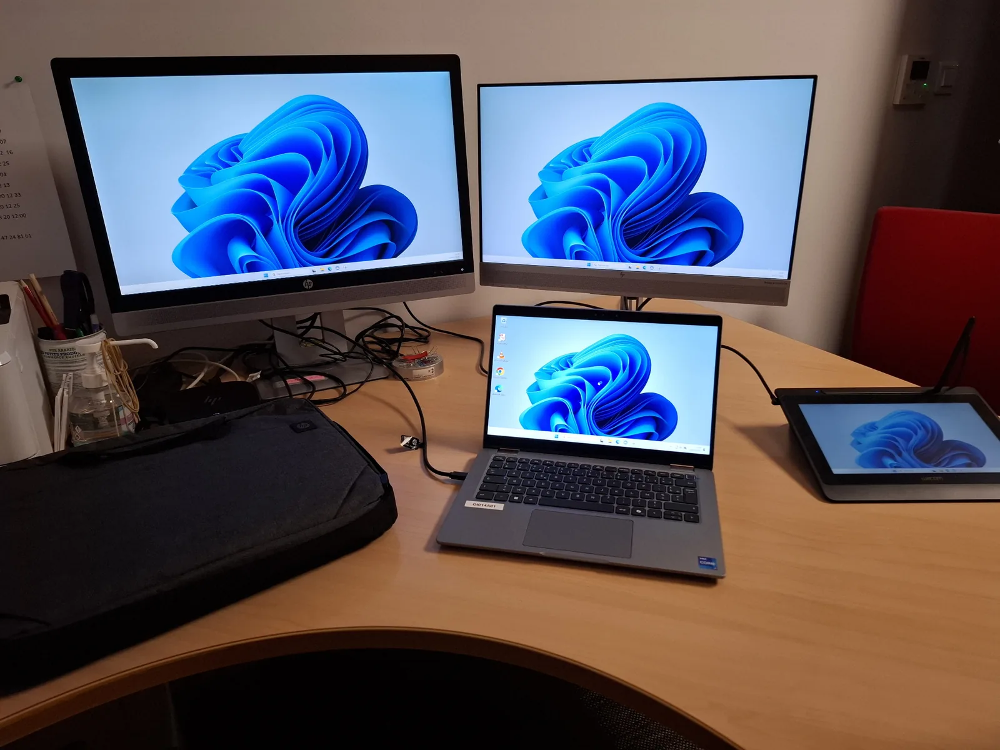

Proximité
Écoute, pédagogie et accompagnement des utilisateurs sur site.
En CDI - à l’écoute d’opportunités
J’accompagne les utilisateurs, diagnostique les incidents et assure le déploiement ainsi que le maintien opérationnel des équipements informatiques.
À propos
Technicien informatique en CDI chez TIBCO Service, j’interviens au plus près des utilisateurs pour résoudre les incidents, préparer les équipements et assurer la continuité du service.
Mon parcours associe le support terrain, les environnements professionnels exigeants et une formation en développement. Cette double compétence me permet de comprendre rapidement un problème, d’expliquer clairement la solution et d’améliorer les usages au quotidien.
Écoute, pédagogie et accompagnement des utilisateurs sur site.
Diagnostic structuré et traitement efficace des incidents.
Interventions soignées, traçabilité et respect des procédures.
Parcours
Chaque expérience est désormais accompagnée d’un aperçu et d’une page détaillée présentant les missions réalisées.

Voir l’expérienceTIBCO Service · Parcours continu depuis janvier 2024
Interventions de proximité sur un large périmètre : agences Banque Populaire, Banque CCF et Arkéa, points de vente PMU, ainsi que des environnements Nickel, Sephora, THOM Group et CDC Informatique.
 Voir l’expérience
Voir l’expérience
Ty’bulles
Amélioration d’un site marchand PrestaShop, création d’un chatbot, optimisation SEO et évolution de pages.
Voir les images et les missions → Voir l’expérience
Voir l’expérience
STCOM
Installation d’équipements, raccordement, contrôle de conformité et interventions de dépannage chez les clients.
Voir l’image et les missions →Cas concrets
Des exemples réels d’interventions réalisées dans les agences, points de vente et sites professionnels de la région lyonnaise, jusqu’à Villefranche-sur-Saône et Bourg-en-Bresse.

Contrôle des bornes, écrans et terminaux PMU, qualification de l’incident et remise en service sur l’ensemble du périmètre d’intervention.

Préparation du PC, installation des écrans et périphériques, vérifications finales et accompagnement de l’utilisateur.

Interventions dans les agences Banque Populaire, Banque CCF et Arkéa à Lyon, Villefranche-sur-Saône et Bourg-en-Bresse.
Savoir-faire
Un socle orienté support, matériel, assistance et résolution de problèmes.
Accueil, qualification, accompagnement et résolution des incidents avec une communication claire.
Préparation, installation et diagnostic des postes Windows, stations d’accueil, écrans et imprimantes.
Configuration des équipements, remplacement de matériel, vérifications et remise en service.
Premiers diagnostics de connectivité, câblage, ports réseau et périphériques connectés.
Support quotidien sur Windows et Microsoft 365, avec application des procédures d’entreprise.
Notions de développement permettant d’automatiser, documenter et mieux comprendre les applications.
Réalisations
Des projets sélectionnés avec de vraies captures, pour montrer des réalisations concrètes et leur fonctionnement.

Application web de gestion, validation et mise en paiement des fiches de frais, développée dans le cadre du BTS SIO.

Application permettant la saisie de notes, le calcul des moyennes et l’enregistrement des résultats dans une base de données.
Formation
Une base technique polyvalente, complétée par l’expérience du support sur le terrain.
Lycée Jacques Brel, Vénissieux
Spécialité réseaux informatiques et systèmes communicants
Support informatique, matériel, réseau, outils web et nouvelles pratiques.
Contact
Actuellement en CDI, je reste à l’écoute d’opportunités en région lyonnaise et dans toute la Suisse pour des postes de technicien de proximité ou de field support.